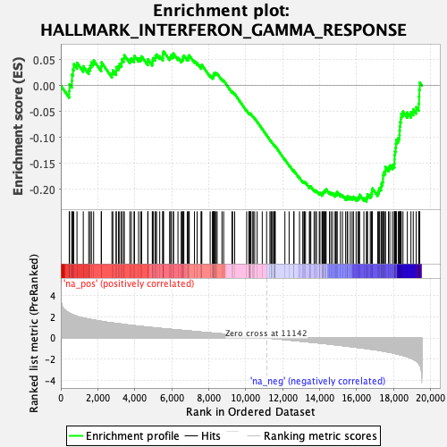
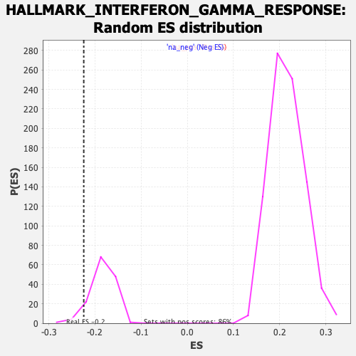

| | | Dataset | CK_basal |
| Phenotype | NoPhenotypeAvailable |
| Upregulated in class | na_neg |
| GeneSet | HALLMARK_INTERFERON_GAMMA_RESPONSE |
| Enrichment Score (ES) | -0.22426385 |
| Normalized Enrichment Score (NES) | -1.2290443 |
| Nominal p-value | 0.06944445 |
| FDR q-value | 0.25640336 |
| FWER p-Value | 0.58 |
Table: GSEA Results Summary

Fig 1: Enrichment plot: HALLMARK_INTERFERON_GAMMA_RESPONSE
Profile of the Running ES Score & Positions of GeneSet Members on the Rank Ordered List
| SYMBOL | RANK IN GENE LIST | RANK METRIC SCORE | RUNNING ES | CORE ENRICHMENT | | 1 | CCL7 | 457 | 2.345 | -0.0101 | No |
| 2 | METTL7B | 474 | 2.330 | 0.0024 | No |
| 3 | SLAMF7 | 598 | 2.226 | 0.0089 | No |
| 4 | OAS3 | 606 | 2.221 | 0.0213 | No |
| 5 | LY6E | 660 | 2.182 | 0.0311 | No |
| 6 | ISOC1 | 699 | 2.151 | 0.0415 | No |
| 7 | BPGM | 876 | 2.040 | 0.0441 | No |
| 8 | HELZ2 | 1216 | 1.878 | 0.0374 | No |
| 9 | XCL1 | 1511 | 1.778 | 0.0324 | No |
| 10 | RIPK2 | 1591 | 1.754 | 0.0384 | No |
| 11 | STAT4 | 1655 | 1.731 | 0.0451 | No |
| 12 | CASP7 | 1776 | 1.694 | 0.0487 | No |
| 13 | TNFAIP6 | 2185 | 1.571 | 0.0366 | No |
| 14 | IL2RB | 2199 | 1.566 | 0.0450 | No |
| 15 | EIF4E3 | 2766 | 1.420 | 0.0238 | No |
| 16 | SP110 | 2817 | 1.410 | 0.0294 | No |
| 17 | SOCS1 | 2992 | 1.372 | 0.0283 | No |
| 18 | CD38 | 3000 | 1.371 | 0.0358 | No |
| 19 | IDO1 | 3121 | 1.341 | 0.0373 | No |
| 20 | PFKP | 3180 | 1.329 | 0.0419 | No |
| 21 | SPPL2A | 3286 | 1.306 | 0.0440 | No |
| 22 | CMTR1 | 3298 | 1.302 | 0.0510 | No |
| 23 | IRF7 | 3400 | 1.281 | 0.0531 | No |
| 24 | BATF2 | 3432 | 1.274 | 0.0588 | No |
| 25 | USP18 | 3735 | 1.204 | 0.0501 | No |
| 26 | SECTM1 | 3818 | 1.187 | 0.0527 | No |
| 27 | UPP1 | 3962 | 1.160 | 0.0520 | No |
| 28 | PDE4B | 3985 | 1.155 | 0.0575 | No |
| 29 | MX2 | 4206 | 1.113 | 0.0525 | No |
| 30 | OASL | 4314 | 1.090 | 0.0533 | No |
| 31 | PTPN2 | 4375 | 1.078 | 0.0564 | No |
| 32 | TRIM21 | 4705 | 1.024 | 0.0452 | No |
| 33 | CSF2RB | 4713 | 1.022 | 0.0508 | No |
| 34 | CFB | 4948 | 0.979 | 0.0443 | No |
| 35 | SERPING1 | 4965 | 0.976 | 0.0491 | No |
| 36 | PSMB9 | 4997 | 0.971 | 0.0531 | No |
| 37 | STAT2 | 5096 | 0.954 | 0.0535 | No |
| 38 | LCP2 | 5124 | 0.949 | 0.0575 | No |
| 39 | RAPGEF6 | 5181 | 0.938 | 0.0600 | No |
| 40 | NOD1 | 5350 | 0.910 | 0.0566 | No |
| 41 | FAS | 5516 | 0.879 | 0.0531 | No |
| 42 | ZNFX1 | 5526 | 0.877 | 0.0577 | No |
| 43 | IL10RA | 5527 | 0.877 | 0.0627 | No |
| 44 | NCOA3 | 5560 | 0.871 | 0.0661 | No |
| 45 | CMKLR1 | 5885 | 0.823 | 0.0541 | No |
| 46 | TNFAIP2 | 5945 | 0.815 | 0.0557 | No |
| 47 | IRF4 | 5975 | 0.811 | 0.0589 | No |
| 48 | CASP1 | 6087 | 0.794 | 0.0577 | No |
| 49 | DDX58 | 6093 | 0.793 | 0.0620 | No |
| 50 | ST3GAL5 | 6337 | 0.752 | 0.0537 | No |
| 51 | PTPN6 | 6513 | 0.726 | 0.0489 | No |
| 52 | CIITA | 6559 | 0.719 | 0.0507 | No |
| 53 | LGALS3BP | 6609 | 0.711 | 0.0522 | No |
| 54 | VAMP8 | 6620 | 0.708 | 0.0558 | No |
| 55 | IFNAR2 | 6656 | 0.702 | 0.0580 | No |
| 56 | PTGS2 | 6840 | 0.673 | 0.0524 | No |
| 57 | PLSCR1 | 6910 | 0.662 | 0.0527 | No |
| 58 | FPR1 | 6911 | 0.662 | 0.0565 | No |
| 59 | TRIM14 | 6948 | 0.656 | 0.0584 | No |
| 60 | FCGR1A | 7229 | 0.616 | 0.0475 | No |
| 61 | IRF5 | 7372 | 0.591 | 0.0435 | No |
| 62 | TAPBP | 7588 | 0.555 | 0.0356 | No |
| 63 | TRIM26 | 7605 | 0.552 | 0.0379 | No |
| 64 | RIPK1 | 7628 | 0.549 | 0.0399 | No |
| 65 | IFIH1 | 8079 | 0.481 | 0.0194 | No |
| 66 | ARL4A | 8201 | 0.461 | 0.0158 | No |
| 67 | LAP3 | 8242 | 0.455 | 0.0164 | No |
| 68 | DHX58 | 8257 | 0.451 | 0.0183 | No |
| 69 | PARP12 | 8265 | 0.450 | 0.0205 | No |
| 70 | IL4R | 8270 | 0.449 | 0.0229 | No |
| 71 | SOCS3 | 8327 | 0.440 | 0.0225 | No |
| 72 | PNPT1 | 8330 | 0.440 | 0.0249 | No |
| 73 | XAF1 | 8403 | 0.429 | 0.0237 | No |
| 74 | PIM1 | 8455 | 0.422 | 0.0235 | No |
| 75 | GCH1 | 8716 | 0.383 | 0.0122 | No |
| 76 | LYSMD2 | 8807 | 0.369 | 0.0097 | No |
| 77 | CMPK2 | 9257 | 0.295 | -0.0119 | No |
| 78 | PSMB10 | 9293 | 0.289 | -0.0120 | No |
| 79 | PLA2G4A | 9405 | 0.274 | -0.0162 | No |
| 80 | BTG1 | 10053 | 0.174 | -0.0486 | No |
| 81 | MYD88 | 10173 | 0.155 | -0.0539 | No |
| 82 | CXCL10 | 10177 | 0.155 | -0.0532 | No |
| 83 | RNF31 | 10238 | 0.146 | -0.0554 | No |
| 84 | RSAD2 | 10244 | 0.144 | -0.0548 | No |
| 85 | IRF9 | 10247 | 0.144 | -0.0541 | No |
| 86 | CDKN1A | 10287 | 0.138 | -0.0553 | No |
| 87 | RTP4 | 10390 | 0.122 | -0.0599 | No |
| 88 | PSMA2 | 10401 | 0.120 | -0.0597 | No |
| 89 | TNFSF10 | 10487 | 0.106 | -0.0635 | No |
| 90 | CD69 | 10621 | 0.085 | -0.0699 | No |
| 91 | PSMB2 | 10896 | 0.039 | -0.0839 | No |
| 92 | IL7 | 11131 | 0.002 | -0.0960 | No |
| 93 | RNF213 | 11311 | -0.028 | -0.1051 | No |
| 94 | CXCL11 | 11367 | -0.035 | -0.1077 | No |
| 95 | SLC25A28 | 11396 | -0.040 | -0.1089 | No |
| 96 | MTHFD2 | 11452 | -0.048 | -0.1115 | No |
| 97 | JAK2 | 11509 | -0.056 | -0.1141 | No |
| 98 | VCAM1 | 11555 | -0.063 | -0.1160 | No |
| 99 | DDX60 | 11560 | -0.064 | -0.1159 | No |
| 100 | GZMA | 11582 | -0.066 | -0.1166 | No |
| 101 | MX1 | 11598 | -0.068 | -0.1169 | No |
| 102 | NMI | 12120 | -0.155 | -0.1430 | No |
| 103 | IFI27 | 12348 | -0.193 | -0.1536 | No |
| 104 | NAMPT | 12605 | -0.238 | -0.1655 | No |
| 105 | PSMB8 | 12607 | -0.239 | -0.1642 | No |
| 106 | TAP1 | 12909 | -0.292 | -0.1781 | No |
| 107 | CASP3 | 13086 | -0.320 | -0.1853 | No |
| 108 | SELP | 13146 | -0.329 | -0.1865 | No |
| 109 | MT2A | 13176 | -0.336 | -0.1861 | No |
| 110 | PTPN1 | 13235 | -0.347 | -0.1871 | No |
| 111 | APOL6 | 13443 | -0.383 | -0.1956 | No |
| 112 | ZBP1 | 13475 | -0.389 | -0.1949 | No |
| 113 | OAS2 | 13522 | -0.397 | -0.1950 | No |
| 114 | LATS2 | 13699 | -0.427 | -0.2017 | No |
| 115 | NUP93 | 13779 | -0.441 | -0.2032 | No |
| 116 | VAMP5 | 13829 | -0.448 | -0.2032 | No |
| 117 | SOD2 | 13979 | -0.476 | -0.2081 | No |
| 118 | CFH | 14016 | -0.481 | -0.2072 | No |
| 119 | IRF8 | 14127 | -0.501 | -0.2101 | No |
| 120 | NFKB1 | 14150 | -0.506 | -0.2083 | No |
| 121 | ICAM1 | 14175 | -0.509 | -0.2066 | No |
| 122 | TRIM25 | 14204 | -0.515 | -0.2051 | No |
| 123 | IFI44 | 14247 | -0.525 | -0.2042 | No |
| 124 | CCL2 | 14287 | -0.531 | -0.2032 | No |
| 125 | EPSTI1 | 14317 | -0.536 | -0.2016 | No |
| 126 | C1R | 14353 | -0.544 | -0.2003 | No |
| 127 | PARP14 | 14528 | -0.579 | -0.2060 | No |
| 128 | IRF1 | 14611 | -0.597 | -0.2068 | No |
| 129 | PSME1 | 14700 | -0.617 | -0.2078 | No |
| 130 | IFIT1 | 14833 | -0.641 | -0.2109 | No |
| 131 | ADAR | 14862 | -0.646 | -0.2086 | No |
| 132 | TDRD7 | 14934 | -0.662 | -0.2085 | No |
| 133 | STAT3 | 14944 | -0.664 | -0.2052 | No |
| 134 | ST8SIA4 | 15124 | -0.702 | -0.2104 | No |
| 135 | ISG15 | 15234 | -0.722 | -0.2119 | No |
| 136 | PELI1 | 15405 | -0.756 | -0.2163 | No |
| 137 | IL6 | 15487 | -0.773 | -0.2160 | No |
| 138 | ITGB7 | 15517 | -0.781 | -0.2131 | No |
| 139 | PSMA3 | 15656 | -0.809 | -0.2155 | No |
| 140 | CD86 | 15759 | -0.835 | -0.2160 | No |
| 141 | TOR1B | 15828 | -0.852 | -0.2146 | No |
| 142 | CD40 | 15970 | -0.878 | -0.2169 | No |
| 143 | CASP8 | 16067 | -0.899 | -0.2167 | No |
| 144 | IFIT2 | 16129 | -0.912 | -0.2146 | No |
| 145 | GBP6 | 16160 | -0.916 | -0.2108 | No |
| 146 | CCL5 | 16393 | -0.967 | -0.2173 | No |
| 147 | CASP4 | 16529 | -1.000 | -0.2185 | Yes |
| 148 | OGFR | 16566 | -1.010 | -0.2146 | Yes |
| 149 | IL15RA | 16586 | -1.016 | -0.2097 | Yes |
| 150 | TRAFD1 | 16738 | -1.051 | -0.2115 | Yes |
| 151 | BANK1 | 16796 | -1.068 | -0.2083 | Yes |
| 152 | SAMD9L | 16828 | -1.075 | -0.2037 | Yes |
| 153 | CXCL9 | 16853 | -1.082 | -0.1987 | Yes |
| 154 | STAT1 | 17137 | -1.146 | -0.2068 | Yes |
| 155 | EIF2AK2 | 17195 | -1.165 | -0.2030 | Yes |
| 156 | SSPN | 17231 | -1.179 | -0.1980 | Yes |
| 157 | IRF2 | 17319 | -1.205 | -0.1956 | Yes |
| 158 | IL18BP | 17340 | -1.210 | -0.1897 | Yes |
| 159 | IFIT3 | 17402 | -1.230 | -0.1857 | Yes |
| 160 | ISG20 | 17425 | -1.238 | -0.1798 | Yes |
| 161 | BST2 | 17427 | -1.238 | -0.1727 | Yes |
| 162 | PNP | 17464 | -1.249 | -0.1674 | Yes |
| 163 | TNFAIP3 | 17549 | -1.274 | -0.1644 | Yes |
| 164 | NFKBIA | 17551 | -1.276 | -0.1571 | Yes |
| 165 | SAMHD1 | 17722 | -1.331 | -0.1582 | Yes |
| 166 | PML | 17794 | -1.353 | -0.1541 | Yes |
| 167 | IFI35 | 17938 | -1.404 | -0.1534 | Yes |
| 168 | RBCK1 | 18043 | -1.447 | -0.1505 | Yes |
| 169 | IFI44L | 18048 | -1.448 | -0.1424 | Yes |
| 170 | AUTS2 | 18051 | -1.449 | -0.1341 | Yes |
| 171 | ARID5B | 18074 | -1.460 | -0.1269 | Yes |
| 172 | GPR18 | 18110 | -1.478 | -0.1202 | Yes |
| 173 | FGL2 | 18126 | -1.484 | -0.1124 | Yes |
| 174 | CD274 | 18146 | -1.492 | -0.1048 | Yes |
| 175 | IFITM2 | 18248 | -1.533 | -0.1012 | Yes |
| 176 | UBE2L6 | 18314 | -1.565 | -0.0956 | Yes |
| 177 | IL15 | 18322 | -1.568 | -0.0869 | Yes |
| 178 | TXNIP | 18337 | -1.574 | -0.0786 | Yes |
| 179 | HERC6 | 18354 | -1.583 | -0.0703 | Yes |
| 180 | GBP4 | 18392 | -1.598 | -0.0631 | Yes |
| 181 | IFITM3 | 18413 | -1.603 | -0.0549 | Yes |
| 182 | HIF1A | 18507 | -1.647 | -0.0502 | Yes |
| 183 | P2RY14 | 18742 | -1.781 | -0.0521 | Yes |
| 184 | C1S | 18936 | -1.901 | -0.0511 | Yes |
| 185 | SRI | 19062 | -2.013 | -0.0460 | Yes |
| 186 | PSME2 | 19223 | -2.178 | -0.0417 | Yes |
| 187 | B2M | 19358 | -2.416 | -0.0348 | Yes |
| 188 | CD74 | 19378 | -2.465 | -0.0216 | Yes |
| 189 | NLRC5 | 19388 | -2.490 | -0.0077 | Yes |
| 190 | MVP | 19414 | -2.556 | 0.0057 | Yes |
Table: GSEA details [plain text format]

Fig 2: HALLMARK_INTERFERON_GAMMA_RESPONSE: Random ES distribution
Gene set null distribution of ES for HALLMARK_INTERFERON_GAMMA_RESPONSE